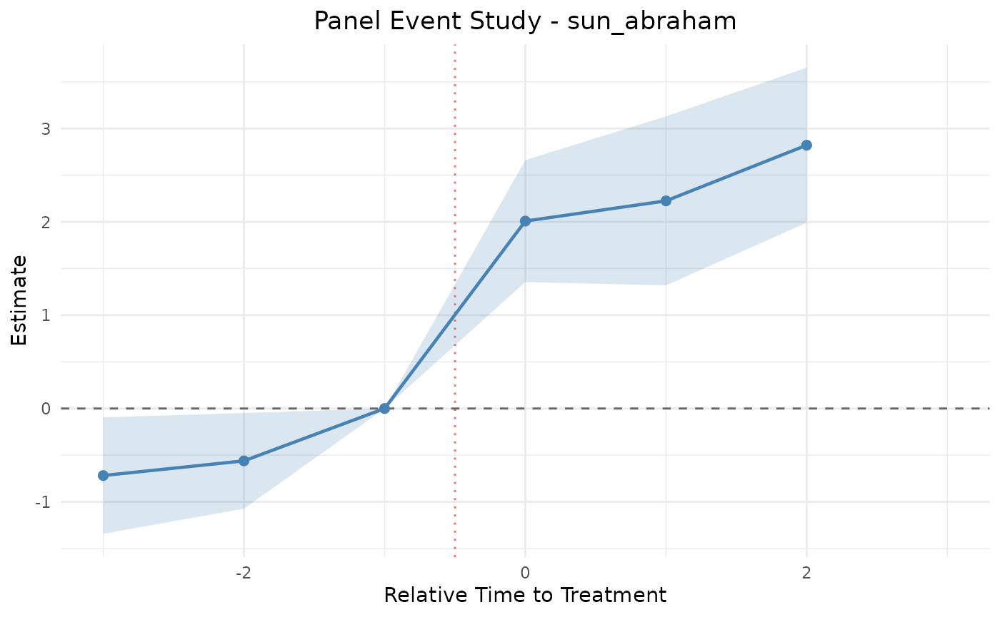

Methods: Panel / Difference-in-Differences
Source:vignettes/articles/methods-panel-did.Rmd
methods-panel-did.Rmd1. Title & Abstract
This article covers EventStudy’s panel / difference-in-differences (DiD) estimators for staggered-adoption designs, where units are treated at different times. It contrasts the classic two-way fixed-effects (TWFE) estimator with the modern heterogeneity-robust estimators (Sun-Abraham, Callaway-Sant’Anna, de Chaisemartin-D’Haultfoeuille, Borusyak-Jaravel-Spiess), and renders a dynamic event-study estimate live on an inline synthetic panel.
2. When to Use This Method
Use a panel event study when treatment is absorbing and staggered across units, and you want event-time (leads/lags) dynamics rather than a single average effect. Reach for the modern estimators when treatment effects are heterogeneous across cohorts or time, because standard TWFE can then be biased by “forbidden comparisons” that use already-treated units as controls (Goodman-Bacon 2021).
3. Intuition
Static TWFE nets out unit and time averages and reads the residual jump at treatment as the effect. Dynamic TWFE traces that jump across event time, using the period just before treatment (k = -1) as the baseline. The modern estimators repair TWFE by only ever comparing treated units to not-yet-treated or never-treated units, cohort by cohort.
4. Model & Null Hypothesis
Static TWFE with unit effects \alpha_i, time effects \lambda_t, and a single treatment dummy D_{it}:
y_{it} = \alpha_i + \lambda_t + \delta D_{it} + \varepsilon_{it}.
Dynamic / event-study TWFE replaces the single dummy with event-time indicators relative to each unit’s treatment time g_i, omitting the base period k = -1:
y_{it} = \alpha_i + \lambda_t + \sum_{k \neq -1} \beta_k \,\mathbf{1}\{t - g_i = k\} + \varepsilon_{it}.
Sun-Abraham estimates cohort-by-relative-time interaction effects and aggregates them with cohort-share weights, avoiding the contamination that biases plain dynamic TWFE under heterogeneity:
The null hypothesis is H_0: \beta_k = 0 for all k \geq 0 — no dynamic treatment effect at any post-treatment horizon.
5. Assumptions
- Parallel trends (conditional on fixed effects) between treated and comparison units.
- No anticipation before treatment time g_i.
- Absorbing treatment: once treated, always treated.
- Modern estimators additionally allow heterogeneous effects across cohorts and relative time; TWFE assumes homogeneity for an unbiased average.
6. Worked Example
We build an inline synthetic staggered panel in base R with an
explicit local set.seed(42) (on top of the
_setup.Rmd seed) so the rendered coefficients are
byte-stable across rebuilds: 10 units over 10 periods, 3 staggered
cohorts.
library(EventStudy)
set.seed(42)
n_units <- 10
periods <- 1:10
cohorts <- c(4, 6, 8) # 3 staggered treatment cohorts
panel <- do.call(rbind, lapply(1:n_units, function(u) {
g <- cohorts[((u - 1) %% 3) + 1]
data.frame(
unit_id = u,
time_id = periods,
treatment_time = g,
treated = as.integer(periods >= g),
y = 0.5 * u + 0.3 * periods +
1.5 * (periods >= g) +
rnorm(length(periods), 0, 0.5)
)
}))
task <- PanelEventStudyTask$new(
panel,
unit_id = "unit_id",
time_id = "time_id",
outcome = "y", # passed explicitly, not relying on the default
treatment = "treated",
treatment_time = "treatment_time"
)The live estimators use only
stats::lm() and are always available. The entry point is
the function
estimate_panel_event_study(task, method = ...):
res <- estimate_panel_event_study(task, method = "dynamic_twfe", leads = 3, lags = 3)
# static_twfe and sun_abraham are equally live (base R):
res_static <- estimate_panel_event_study(task, method = "static_twfe")
res_sa <- estimate_panel_event_study(task, method = "sun_abraham", leads = 3, lags = 3)The modern external-package estimators are shown
conceptually only — they require optional packages and are gated
eval=FALSE. Note the exact source method
strings (not the shorthand):
estimate_panel_event_study(task, method = "callaway_santanna") # needs 'did'
estimate_panel_event_study(task, method = "dechaisemartin_dhaultfoeuille") # needs 'DIDmultiplegt'
estimate_panel_event_study(task, method = "borusyak_jaravel_spiess") # needs 'didimputation'7. Rendered Table
es_tt(
res$results$coefficients,
caption = "Dynamic TWFE event-time coefficients (base period k = -1) on the synthetic staggered panel."
)| relative_time | estimate | std.error | statistic | p.value |
|---|---|---|---|---|
| -3 | -0.7182 | 0.3181 | -2.258 | 0.02395869066429 |
| -2 | -0.561 | 0.2615 | -2.146 | 0.03190555093361 |
| -1 | 0 | 0 | NA | NA |
| 0 | 2.0085 | 0.3333 | 6.026 | 0.0000000016834 |
| 1 | 2.2249 | 0.4618 | 4.818 | 0.00000145136014 |
| 2 | 2.8218 | 0.4236 | 6.661 | 0.00000000002721 |
| 3 | NA | NA | NA | NA |
8. Rendered Plot
plot_panel_event_study(res)
#> Warning: Removed 1 row containing missing values or values outside the scale range
#> (`geom_ribbon()`).
#> Warning: Removed 1 row containing missing values or values outside the scale range
#> (`geom_point()`).
#> Warning: Removed 1 row containing missing values or values outside the scale range
#> (`geom_line()`).
Dynamic TWFE event-study coefficients across relative time.
9. Interpretation
The pre-treatment coefficients (relative time < 0) should hover near zero — a visual parallel-trends check. The post-treatment coefficients recover the built-in effect (a level shift of 1.5 at and after treatment). If the pre coefficients trended, the parallel-trends assumption in §5 would be suspect and the estimate untrustworthy. When cohort effects differ, prefer Sun-Abraham or the external estimators — plain dynamic TWFE can attribute one cohort’s dynamics to another through forbidden comparisons (Callaway and Sant’Anna 2021; Sun and Abraham 2021; Chaisemartin and D’Haultfœuille 2020; Borusyak et al. 2024).